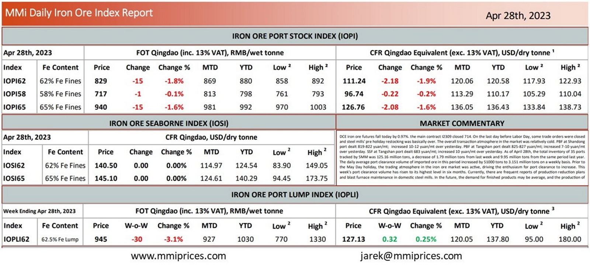

DCE iron ore futures fall today by 0.97%. the main contract I2309 closed 714. On the last day beforeLabor Day, some trade orders were closed and steel mills’ pre holiday restocking was basically over. The overall transaction atmosphere in the market was relatively cold. PBF at Shandong port dealt 819-822 yuan/mt; increased 10-12 yuan/mt over yesterday. PBF at Tangshan port dealt 825-827 yuan/mt; increased 7-10 yuan/mt over yesterday. SSF at Tangshan port dealt 683 yuan/mt; increased 10 yuan/mt over yesterday. As of April 28th, the total inventory of 35 ports tracked by SMM was 125.16 million tons, a decrease of 1.79 million tons from last week and 9.95 million tons from the same period last year. The daily average port clearance volume of imported ore in this period increased by 51000 tons to 3.151 million tons on a weekly basis. Prior to the May Day holiday, the trading atmosphere in the iron ore market was active, driving the enthusiasm for port clearance to increase. This week’s port clearance volume has risen to its highest level in six months. Currently, there are frequent reports of production reduction plans and blast furnace maintenance in domestic steel mills. In the future, the demand for finished products may be average, and the production of.

Download PDFSource: Metals Market Index (MMi)